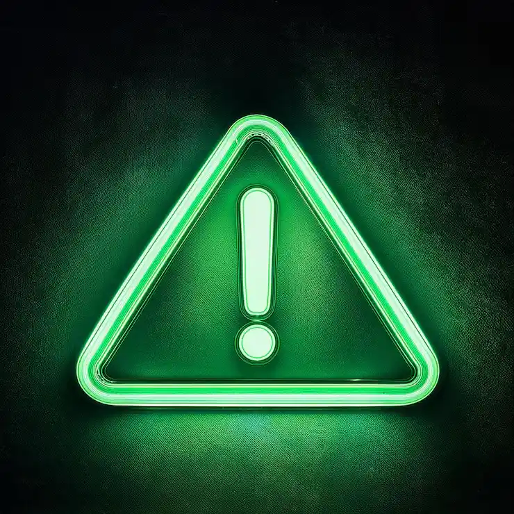
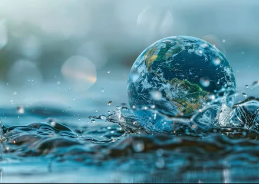
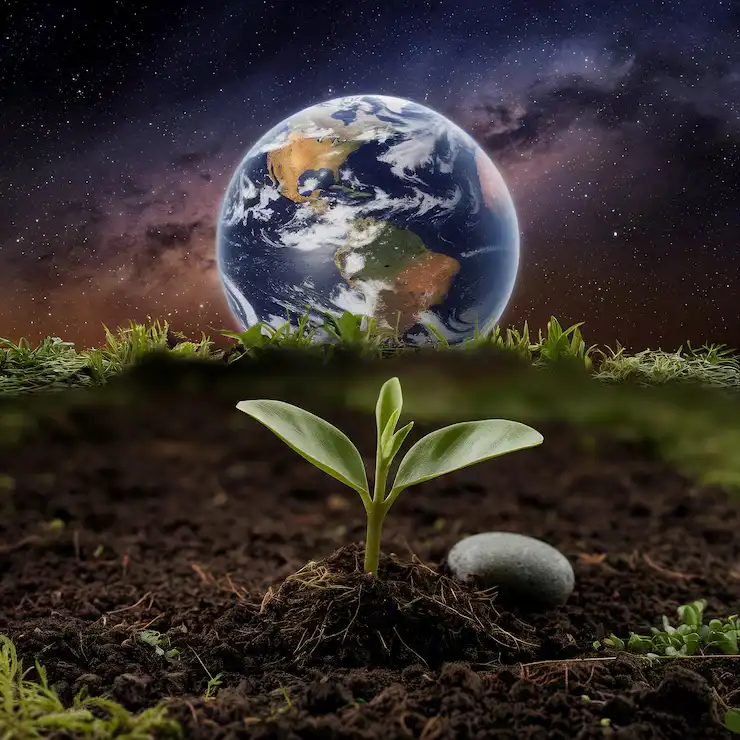

O Brasil recicla apenas 3% do seu lixo eletrônico.
Um único celular pode contaminar até 600 mil litros de água.


Metais pesados como chumbo e mercúrio contaminam o solo e chegam ao seu prato.
A escolha de quem entende o impacto
Acreditamos que a gestão eficiente de REEE
começa com a informação.
Por isso, desenvolvemos este mapeamento georreferenciado para que os moradores de Itupeva, Jundiaí e arredores saibam exatamente onde descartar seus equipamentos de forma segura e responsável.